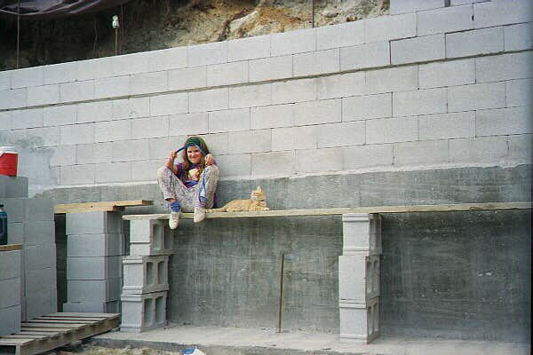

New pictures, received 10/3/99, part 2
More October pictures (part 1)
David cuts block to size.

Annie and Scamp watch the progress.
The house foundation; back wall/in-hill portion.

Alice, Annie and friend Annie (at wall)
strenghten the front foundation by making concrete to fill the cores of the
blocks.

Sisters from Servants of the Lord, staying at
Sunset Valley for a retreat, visit our project and offer support.
Sister Maria's father, visiting from Argentina, helps
apply surface bonding cement to the foundation.

Alice applies the surface bonding cement to
dry-stacked concrete blocks.
Back to the Evankow's home page